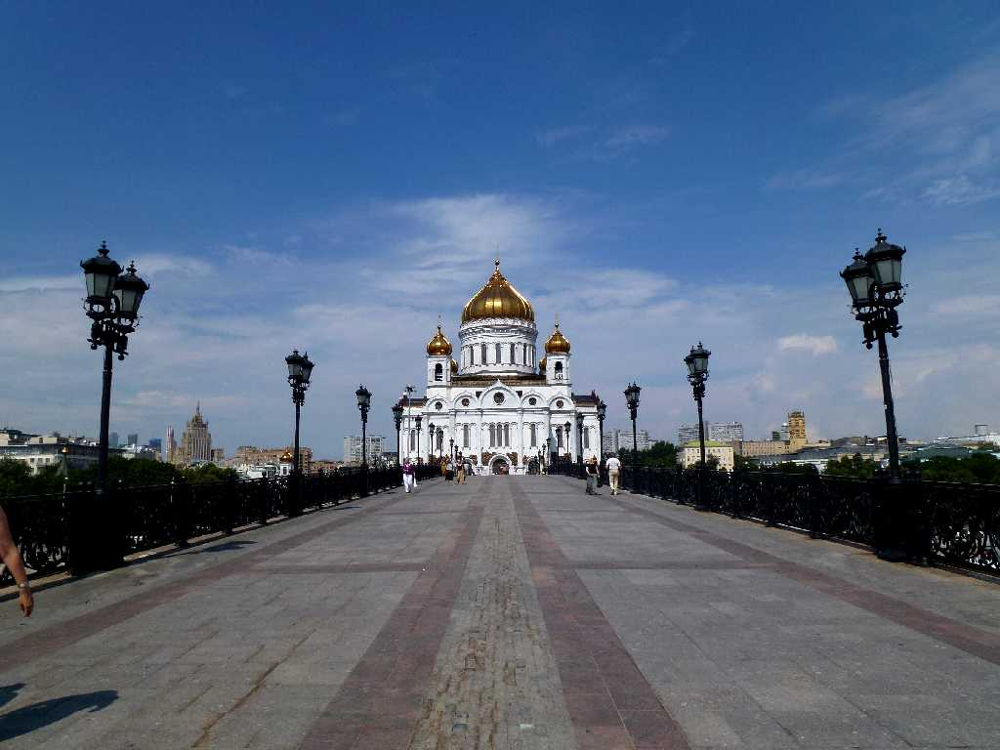
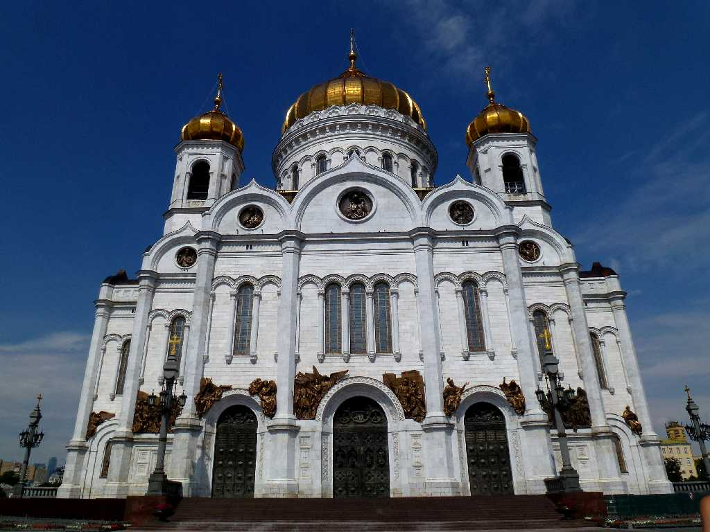
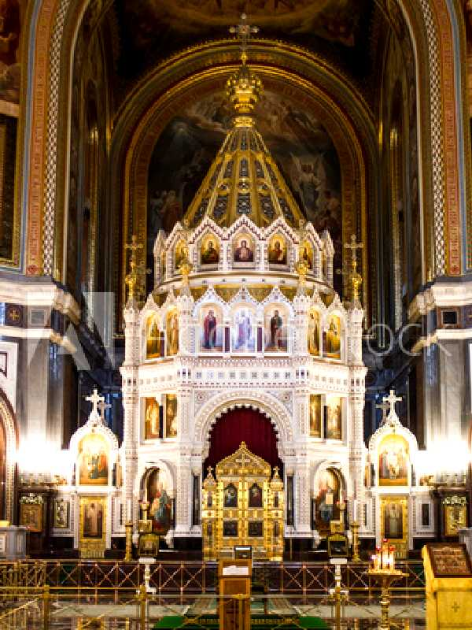
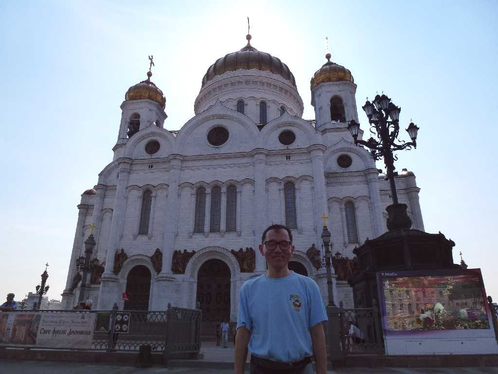

July 7 2013 Cathedral of Christ the Saviour Moscow
８０日間世界一周鉄道の旅で１４日目 ロシア正教の総本山救世主キリスト大聖堂

Cathedral of Christ the Saviour
１８８３年に創られ２０００年に再建された高さ１０３ｍのロシア正教大聖堂

Altar Cathedral of Christ the Saviour
朝日曜ミサに参列したがロシア正教会には椅子がないので２時間立ちっ放しで疲れました

July 5 2013 Cathedral of Christ the Saviour